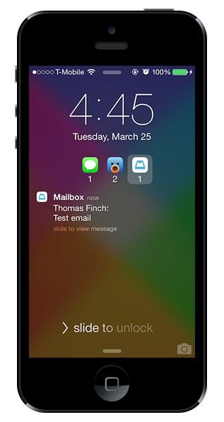

Priority Hub
Priority Hub brings organized notifications to your lockscreen. Inspired by the Blackberry 10 priority hub feature, it sorts your lockscreen notifications by app and allows you to quickly find important information. In addition, you can clear notifications for an app by pulling down on the notification list. Priority Hub also includes full theme support so lockscreen app icons can be themed separately from other system icons. Over 60,000 downloads to date!

ClassicSwitcher
ClassicSwitcher brings the classic bar-style app switcher to iOS 7. It fits in with iOS 7's look and feel while providing a fast, efficient alternative to the default app switcher. It's packed with great features like multiple rows, a function to quit all apps, an always editing mode, and multiple overlay styles and opening animations.

Axle
Designed by Sentry, the well-known designer and founder of A3Tweaks, Axle brings an entirely new concept to the iOS 6 app switcher. It adds circular sliders for volume and brightness as well as a brand-new toggles page to the left of the music controls so you can easily change settings wherever you are. It's fast, convenient, and fun to use!

NCWeather
NCWeather is a beautiful weather widget for iOS 7. It integrates perfectly with notification center and balances functionality with a clean design. By tapping on the widget you can switch between current conditions, hourly weather, and weekly forecast views. Plus, since it's a part of notification center it's always just a swipe away.